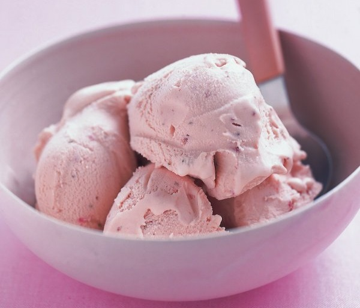

No-Churn Salted Caramel & Bourbon Ice Cream
INGREDIENTS :
- 397g can carnation caramel or dulce de leche
- 300ml double cream
- 1-2 teaspoons soft sea salt flakes
- 1-3 tablespoons bourbon whiskey (15-45ml)
METHOD :
- Tip the caramel, cream and 1 tsp of the salt into a bowl and whisk with a hand mixer until the mixture thickens. Add the bourbon 1 tablespoon at a time tasting after each addition. Add more salt and bourbon to taste remembering that upon freezing the flavours will be muted. I ended up using 1.5 teaspoons of salt and 3 tablespoons of bourbon.
- Give the final mixture one last whisk until it holds soft peaks and then pour into a 1 litre freezer safe container and freeze overnight.
- This is very soft scoop due to the alcohol content so there is no need to soften before serving.